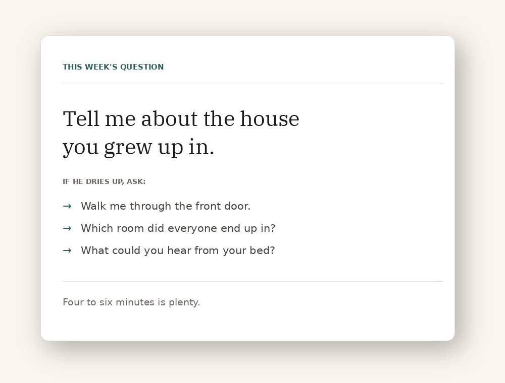
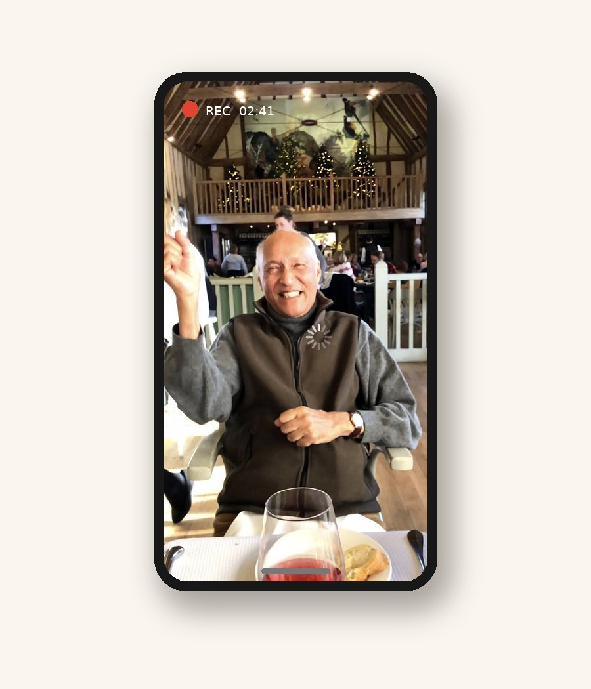
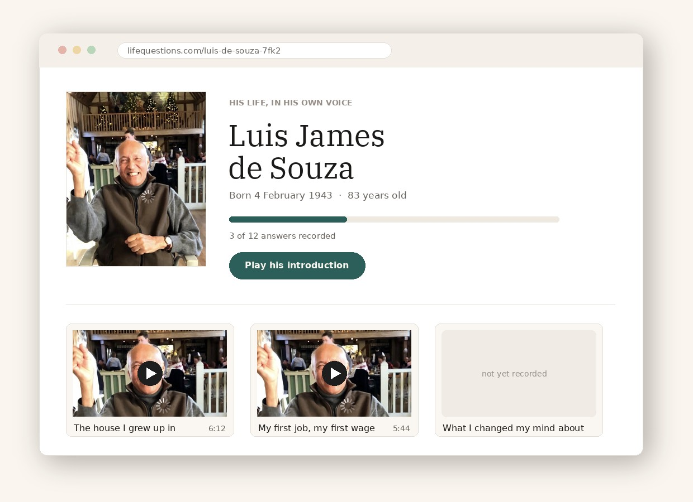
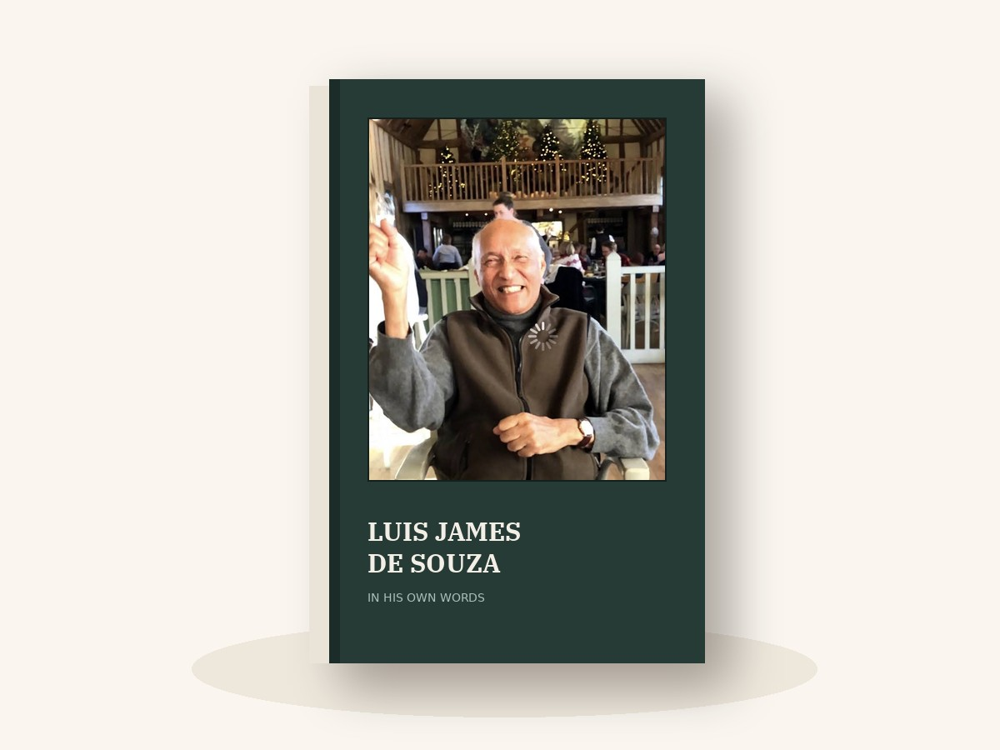

Their life, in their own voice
A life biography, recorded rather than written. We send the questions; they answer on your phone, at their own kitchen table. Your mother, your father, a grandparent, an aunt — or yourself.
Free to start · No app to install · Private unless you share it
Sixty questionsWritten to get past “it was fine” — each with follow-ups for when they dry up.
Forty minutesThat's a first recording. Most families do three sittings and stop worrying about it.
Yours for goodDownload every file whenever you like. No subscription, ever.
What you end up with
Every question becomes one short film. Press any of them — this is exactly how a finished page plays.
Example recordings, borrowed from public oral-history interviews while we build. Each is credited, and real families replace them as they join.

Step one
One a week, or all sixty at once if you're in a hurry. Every question comes with the follow-ups that turn a thirty-second answer into a proper story — the ones you'd never think to ask in the moment.
Family can add their own too, credited on the page: asked by Tom, aged 9.

Step two
Prop it on a stack of books, sit beside it rather than behind it, ask them, then stay quiet. No app, no editing, no camera crew — and no need for them to be any good at technology, because they never touch it.
Camera-shy? Record their voice over a photograph instead. It works nearly as well.

Step three
Upload, and the page builds itself: their photograph, their dates, their answers, each one a window you press to hear them. One private link for the whole family — their sister, your kids, the cousins in Australia.
Nothing is public. No search engine, no directory, no strangers.

And at the end of it
Every answer is transcribed automatically, so their stories exist as words as well as video. Choose the ones you want, add the photographs, and we print a hardback — the thing that gets passed round at Christmas and ends up on a shelf for forty years.
From £59. One copy or fifteen.
The questions
The easy ones come first. The ones that make people cry are near the end, once they've forgotten the camera is there.
Tell me about the house you grew up in.
Who were your parents, really — not as parents, but as people?
What did you want to be at fifteen, and what happened to that plan?
What was the hardest year of your life, and how did you get through it?
What have you changed your mind about?
What would you say to whoever watches this in fifty years?
Every question can be swapped, skipped or reworded. It's their life, not a form.
What families say
That they wish they'd started ten years earlier.
“He talked for forty minutes about a shop that hasn't existed since 1961. I'd never heard any of it.”
A daughter, recording her father
Example — replace“My kids play the one where she does the voice. That's how they'll remember her — not a photograph.”
A son, recording his mother
Example — replace“We put the link on the order of service. Half the church had watched him by the evening.”
A family, six months on
Example — replaceWhat it costs
Nobody should have to decide, one day, whether to switch off someone they loved.
Start here
£0
Most families
£79 once
Nobody pays alone
£10+ from anyone
Every answer already recorded is free to watch, forever, for anyone with the link. We will never put someone behind a paywall and charge their sister to see them. Money buys more — more questions, the book, the promise it's still here in 2075.
Start
A minute to set up. Nothing is public until you send the link, and you can delete all of it whenever you like.
Their page would live at
lifequestions.com/
Demo — not connected yet. Nothing has been sent or stored.
Free. No card needed.
Straight answers
Only the people you send the link to. Pages are never listed or searchable, there's no directory to browse, and the videos are unlisted so they appear on no channel and in no search results.
Most people do, for about four minutes. Sit off to the side so they're talking to you and not a lens, and don't call it an interview. If they really won't have it, record their voice over a photograph.
The page becomes a memorial with one change of setting. Their dates close, their best answers move to the top, and the questions they never got to stay on the page instead of being quietly deleted.
You get every file, and that's written down rather than implied. You can download the whole archive — video and transcripts — at any time, without asking us.
No. Not now, not later, not as an upgrade. Their recordings are not training data and we won't build a chatbot that pretends to be someone you loved.
Not necessarily. Families use the same pages the other way round — everyone else recording their memories of one person. Same questions, different chairs.
One question, forty minutes, a phone propped on a stack of books. It's the part nobody ever regrets.
Start their page — freeAnswer